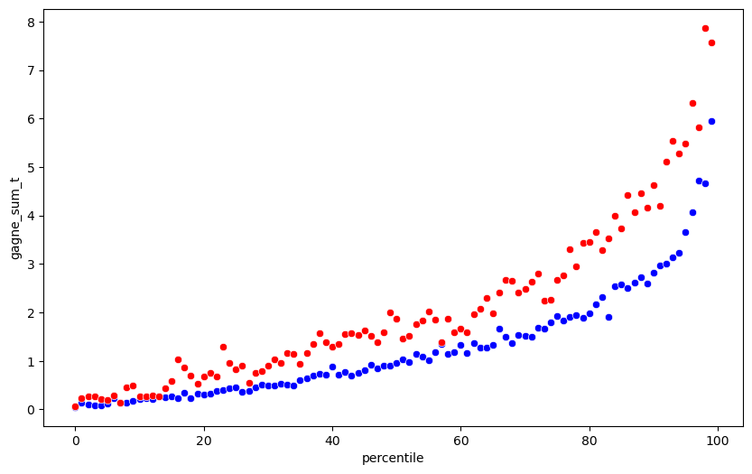

import pandas as pd
import numpy as np
url = "https://gitlab.com/labsysmed/dissecting-bias/-/raw/master/data/data_new.csv?inline=false"
df = pd.read_csv(url)df.head()| risk_score_t | program_enrolled_t | cost_t | cost_avoidable_t | bps_mean_t | ghba1c_mean_t | hct_mean_t | cre_mean_t | ldl_mean_t | race | ... | trig_min-high_tm1 | trig_min-normal_tm1 | trig_mean-low_tm1 | trig_mean-high_tm1 | trig_mean-normal_tm1 | trig_max-low_tm1 | trig_max-high_tm1 | trig_max-normal_tm1 | gagne_sum_tm1 | gagne_sum_t | |
|---|---|---|---|---|---|---|---|---|---|---|---|---|---|---|---|---|---|---|---|---|---|
| 0 | 1.987430 | 0 | 1200.0 | 0.0 | NaN | 5.4 | NaN | 1.110000 | 194.0 | white | ... | 0 | 0 | 0 | 0 | 0 | 0 | 0 | 0 | 0 | 0 |
| 1 | 7.677934 | 0 | 2600.0 | 0.0 | 119.0 | 5.5 | 40.4 | 0.860000 | 93.0 | white | ... | 0 | 1 | 0 | 0 | 1 | 0 | 0 | 1 | 4 | 3 |
| 2 | 0.407678 | 0 | 500.0 | 0.0 | NaN | NaN | NaN | NaN | NaN | white | ... | 0 | 0 | 0 | 0 | 0 | 0 | 0 | 0 | 0 | 0 |
| 3 | 0.798369 | 0 | 1300.0 | 0.0 | 117.0 | NaN | NaN | NaN | NaN | white | ... | 0 | 0 | 0 | 0 | 0 | 0 | 0 | 0 | 0 | 0 |
| 4 | 17.513165 | 0 | 1100.0 | 0.0 | 116.0 | NaN | 34.1 | 1.303333 | 53.0 | white | ... | 0 | 0 | 0 | 0 | 0 | 0 | 0 | 0 | 1 | 1 |
5 rows × 160 columns
df_white = df[df['race'] == 'white']
df_black = df[df["race"] == 'black']def percentile_risk_score(df):
df["percentile"] = pd.qcut(df["risk_score_t"], 100, labels=False)
mean_p_values = df.groupby("percentile")["gagne_sum_t"].mean()
mean_p_values = mean_p_values.reset_index()
return mean_p_valueswhite_df =percentile_risk_score(df_white)
black_df =percentile_risk_score(df_black)C:\Users\robsa\AppData\Local\Temp\ipykernel_3364\1664667763.py:2: SettingWithCopyWarning:
A value is trying to be set on a copy of a slice from a DataFrame.
Try using .loc[row_indexer,col_indexer] = value instead
See the caveats in the documentation: https://pandas.pydata.org/pandas-docs/stable/user_guide/indexing.html#returning-a-view-versus-a-copy
df["percentile"] = pd.qcut(df["risk_score_t"], 100, labels=False)
C:\Users\robsa\AppData\Local\Temp\ipykernel_3364\1664667763.py:2: SettingWithCopyWarning:
A value is trying to be set on a copy of a slice from a DataFrame.
Try using .loc[row_indexer,col_indexer] = value instead
See the caveats in the documentation: https://pandas.pydata.org/pandas-docs/stable/user_guide/indexing.html#returning-a-view-versus-a-copy
df["percentile"] = pd.qcut(df["risk_score_t"], 100, labels=False)import matplotlib.pyplot as plt
import seaborn as sns
plt.figure(figsize=(10, 6))
sns.scatterplot(white_df, x = "percentile", y = "gagne_sum_t", markers="o", color = "blue")
sns.scatterplot(black_df, x = "percentile", y = "gagne_sum_t", markers="o", color = "red")
plt.show()